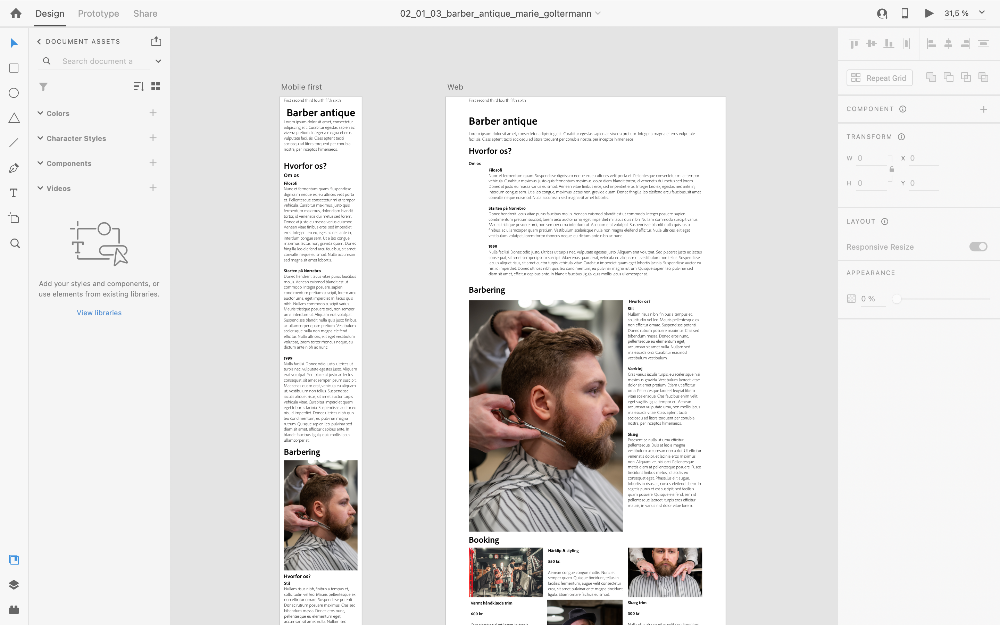
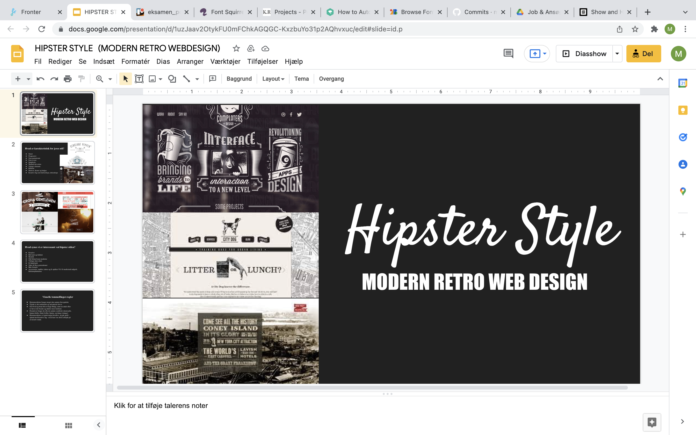
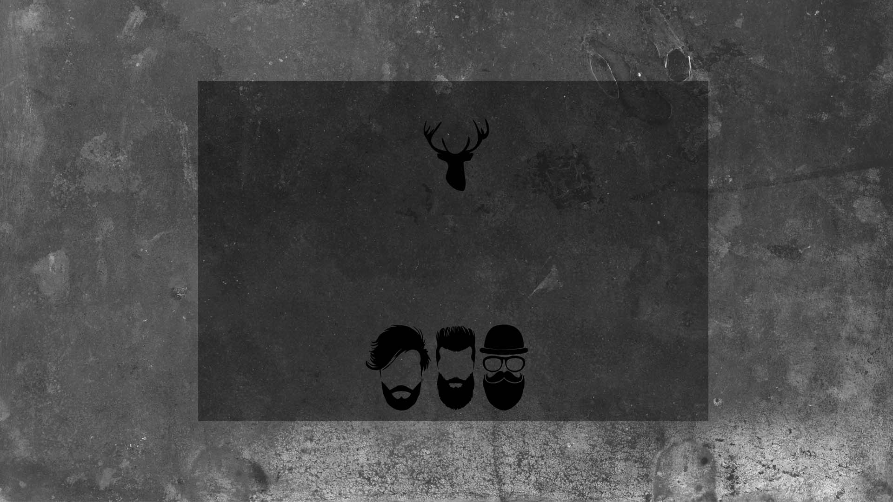

Tema 2 - Grundlæggende HTML
02.04.02 responsive_site_v2
I grundlæggende HTML var vores mål at lave et responsivt site, som gav en grundlæggende indføring til de mest anvendte redskaber i en multimediedesigners værktøjskasse. Redskaberne har dannet et fundament for mine fremtidige opgaver.
Jeg er her blevet introduceret til:
- Grundlæggende faglige begreber inden for design af digitale brugergrænseflader
- Digital indholdsproduktion
- Digital kommunikation og responsivt webdesign
- Opsættelse af websider i html og css
- Lært de første hands-on færdigheder inden for udarbejdelse af grafik
- Billedbehandling i Photoshop
- Opsætning af tekst og billeder i Adobe XD
Udviklingsprocessen kan ses i nedstående dokumentation, samt link til færdigt produkt nederst på siden.
Wireframe
- ADOBE XD -
Stil Pitch
- POWERPOINT -
Styletile
- HTML - CSS - ADOBE XD -
Splashbillede
- ADOBE PHOTOSHOP -
Moodboard